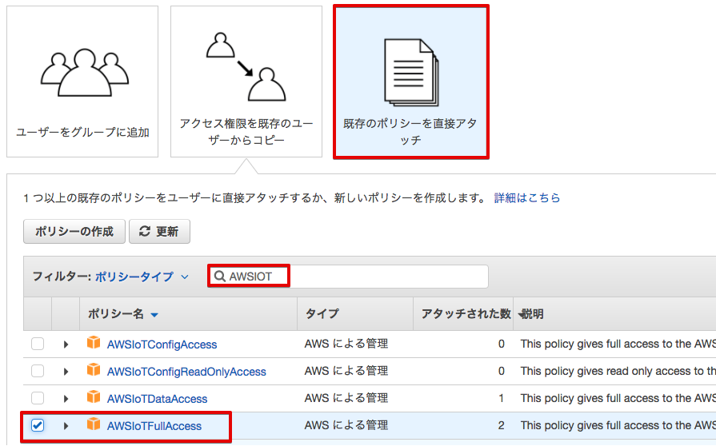

AWS IoT ハンズオン Dojo ~基本編~
本書はAWS IoTおよびAWSの各サービスを利用してIoTの基本的なシステムを構築するためのハンズオン手順 について記述しております。
前提条件
- レンジャーシステムズ製 ゲートウェイ、BLEセンサー、USBケーブル
- Wi-Fiでインターネットに接続できる環境
- 企業内のWiFiは、証明書を使って接続するものが多いですが、ハンズオンキットはこれに対応していません。Guest WiFiの様なパスワード(WPA/WPA2-PSK方式)で接続可能なWiFi環境が必要です。
- AWSアカウント
- 基本的に参加者お一人様につき、個別のAWSアカウント持って頂くことが前提です。
- 複数の参加者で1つのAWSアカウントを共用してハンズオンを実施することも可能です。その場合。事前にIAMユーザーを作って頂くことになります。IAMユーザーの作成方法は、事前準備 のセクションを参照して下さい。
- PC、もしくは Mac
- WiFi接続が可能なWindows PCもしくは、Macを使用します。参加者お一人に1台のマシンをご用意して頂きます。
- Webブラウザ
- 各種設定を行うためにWebブラウザを使用します。Microsoft Internet ExplorerとFireFoxでは問題が出る場合が有りますので、Webブラウザは、必ず、Google Chromeをお使い下さい。
- Webブラウザのポップアップのブロックは、無効にして下さい。
- ACコンセント
- 参加者お一人につき、ハンズオンキットとPC用にAC電源が、2口必要です。
- お客様のサイトでハンズオンを実施する場合、事前にACコンセントが十分かご確認下さい。
- 対象者として以下の方を想定
- IoTを活用したアプリケーション構築をご検討されているデベロッパーの方
- AWSクラウドを活用したシステム・アプリケーション開発に従事されている方
注意事項
- 複数の参加者で1つのAWSアカウントを共用する場合は「参加者番号」を ２桁の数字 01 〜 99 を定め、各自で重複しないようにして下さい。一人で1つのAWSアカウントを利用する場合は「参加者番号」は 01 としてください。
- AWSアカウントは作成後1年間ご利用頂ける無料枠があります。本ハンズオンはその通り実施頂き、ハンズオン終了後に削除することで無料利用枠の範囲で収まるようになっております。無料枠を越えたAWSサービスのご利用料金は受講者の方にご負担いただきますよう、ご了承ください。
- 本番利用されているAWSアカウントでハンズオンを実施するのは避けて下さい。
- ハンズオンに必要な機材は貸出品となりますので、終了後は必ず返却をお願い致します。
事前準備
複数の参加者で1つのAWSアカウントを共用する場合
複数の参加者で1つのAWSアカウントを共用する場合は、他の参加者のためにIAMユーザーを作成して頂く必要があります。IAMユーザーではなく、ルートアカウントを使用して参加される場合でも、ハンズオン内でグラフ表示を行うときにアクセスキーID、シークレットアクセスキーを使用しますので、IAMユーザーを作成して下さい。
複数の参加者で1つのAWSアカウントを共用する場合のIAMユーザーの作成方法
- AWS マネジメントコンソールのIAMから、「ユーザー」をクリックします。
- 「ユーザーを追加」ボタンをクリックします。
- ユーザー名を “iot-subscribe-user” とします。
- 「プログラムによるアクセス」、「AWS マネジメントコンソールへのアクセス」、「自動生成パスワード」にチェックを入れて、「次のステップ：アクセス権限」をクリックします。
- 「既存のポリシーを直接アタッチ」をクリックします。
- 「AdministratorAccess」にチェックを入れ、「次のステップ：確認」をクリックします。
- 「ユーザーの作成」をクリックします。
- ユーザー名、アクセスキー ID、シークレットアクセスキーが表示されますので、「csvのダウンロード」をクリックし、CSVフィルをダウンロードします。
- 閉じます。
ルートユーザーの方は、IAMユーザーで参加される方に、下記の連絡をお願い致します。これらは、ダウンロードしたCSVファイルに記載されていますので、CSVファイルを配布されるのが良いでしょう。
- AWSマネジメントコンソールにログインするURL
- AWSのアカウントID (12桁の数字)
- IAMユーザー名
- IAMユーザー パスワード
- アクセスキーID
- シークレットアクセスキー
ルートアカウントを使用して参加される場合のIAMユーザーの作成方法
- AWS マネジメントコンソールのIAMから、「ユーザー」をクリックします。
- 「ユーザーを追加」ボタンをクリックします。
- ユーザー名を付けます。
- 「プログラムによるアクセス」にチェックを入れて、「次のステップ：アクセス権限」をクリックします。
- 「既存のポリシーを直接アタッチ」をクリックします。
- 「検索」フィールドに、”AWSIOT”と入力して、「AWSIoTFullAccess」にチェックを入れ、「次のステップ：確認」をクリックします。
- 「ユーザーの作成」をクリックします。
- ユーザー名、アクセスキー ID、シークレットアクセスキーが表示されますので、「csvのダウンロード」をクリックし、CSVフィルをダウンロードします。
- 閉じます。

※ アクセスキー ID、シークレットアクセスキーは、ハンズオン内でグラフ表示を行うシナリオで使用します。その際、保存したCSVファイルを参照して下さい。
参考：AWS アカウント内での IAM ユーザーの作成方法
http://docs.aws.amazon.com/ja_jp/IAM/latest/UserGuide/id_users_create.html